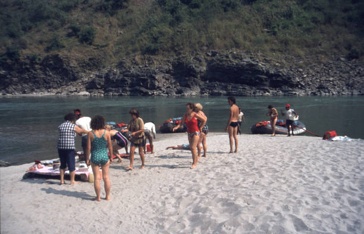

Some Photos


Best Time For White Water Rafting In Trisuli
The best time for White Water Rafting in the Trisuli river is from September to
November. In Nepal, the monsoon season lasts from June to August and winter from
December to February. Rafting during the monsoon at high water volume, rapids, and
in winter seasons when the water volume is low and cold water.
Trisuli River Grade
The majority of the whitewater along this path is grade 2. There are small regular
waves. Beginners with knowledge of paddling can do white water rafting in the Trisuli
river. During monsoons, the water level rises, and the river grades 3, where there
will be difficult rapids with irregular waves. You have to be more careful while
rafting though the route is obvious.
Trisuli River Rafting is among the most well-liked river excursions in Nepal. From the
most skilled kayaker to the beginner rafter, the Trishuli has everything to offer. Just
a short distance from Kathmandu, Pokhara, or Chitwan, travelers with little time in
Nepal might satisfy their need for white water with a journey on the Trishu